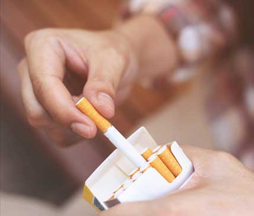

A cigarettát letenni immáron pofonegyszerű!

A dohányzás utáni vágy nélkül
Az elvonási tünetek nélkül

Könyvek és hipnózis nélkül

Gyógyszerek és tapaszok nélkül,
Rendelje meg most kedvezményes áron
Mikor elvszívta az első cigijét,
biztosan dohányos akart maradni
élete végéig?
vigye az kurzort a kép fölé
1.
A nikotin egy olyan szer, ami már egy szál elszívott cigi után is függőséget okozhat. Ami a szervezetre gyakorolt hatását illeti, a heroinét is meghaladja, mert az első cigi után már függőséget okozhat. 

2.
Mielőtt először rágyújtott volna, bizonyára azt gondolta, hogy bármikor abba tudja majd hagyni! De a valóságban sokkal nehezebb, mint amilyennek látszik. 3.
Lehet, hogy szégyelli vagy gyűlöli magát, mert nem képes egyedül letenni. És már annyit hallott a dohányzás káros hatásairól, hogy már nem hatnak Önre a dohányosokról szóló elrettentő történetek. 
Mindenhol követia cigiszag
nem segít sem a rágógumi, sem a parfüm
Azonban még mindigdohányzik.
De tulajdonképpen miért is dohányzik?
Az állandó dohányzás során az agyban található acetilkolin receptorok száma (ezek segítenek az örömhormonok felszabadításában) drasztikusan megnő, de mindeközben a receptorok érzékenysége csökken. Ezeket a receptorokat az acetilkolin nevű szerves vegyület aktiválja, amelynek a szerkezete nagyon hasonlít a nikotinére. A receptorok számának növekedése okozza az acetilkolin saját tartalékának hiányát. És hogy az ember boldognak érezze magát, folyamatosan növelnie kell a nikotin dózisát, ami a függőség kialakulásához vezet.
Az első adag nikotin a szervezetbe kerülve azonnal függőséget okoz. A dohányzás utáni vágy hatással van az agyra, megváltoztatja az ember terveit, viselkedését, még a beszédét is.
Gondoljon csak arra, hogy mikor is
akar a leginkább cigizni?

Rögtön ébredés után

A repülőgépen

Nem dohányzók vendégségében

Alkoholfogyasztást követően
Csak egy kérdésre kell válaszolnia:
Vajon meg akar-e szabadulni a függőségtől, hogy soha többé ne költsön pénzt a cigarettára, hogy jobban meg tudjon birkózni a stresszel, és élvezhesse az életét, anélkül hogy rágyújtana?
Ha igennel válaszolt, akkor az NicoZero segíthet Önnek ebben.
Egy mindössze 4 hetes kúrára lesz csak szüksége
és soha többé nem gyújt rá még egyszer
1
Első hét
Az NicoZero összetevői növelik az (élvezetért felelős) acetilkolin receptorok érzékenységét.
2
Második hét
Elkezdi igazán élvezni a finom ételeket, a kedvenc sorozatát és a pihenést. A stresszhormonok szintje folyamatosan csökken. Amint elmúlik a stresszhelyzet, a cigi utáni vágy is elmúlik, mert nincs szüksége a kikapcsolódásra
3
Harmadik hét
Az agy blokkolja az acetilkolin receptorok nikotin okozta ingerületátadását, Ön pedig már nem élvezi a dohányozást, azonban még mindig van esély rá, hogy folytassa a cigizést. Ebben a szakaszban a szervezet teljesen átalakul és megszokja az örömhormonhoz természetes úton történő hozzájutást.
4
Negyedik hét
Elkezdi észrevenni, hogy újra élvezi azt, amit igazán szeret. Megszűnik a dohányzástól való fizikai és a pszichés függőség
Nicozero
Nikotinfüggőség elleni spray

Zabszem kivonat
Megerősíti az idegrendszert, az ereket és a szívizmot, jótékonyan hat a vér összetételére

Orbáncfű
Fokozatos és maradandó undort idéz elő a dohány szagával szemben, megtisztítja a légutakat a lerakódásoktól.

Gyömbér
Felhígítja a vért, csökkenti a vérlemezkék összetapadását és a vérrögök kialakulását, elősegíti a mérgező anyagok semlegesítését.

Galagonya
Eltávolítja a szervezetből a nikotin lebomlását követően keletkezett anyagokat, tisztítja a tüdőt
Szakértői vélemény
A nikotinfüggőség napjaink súlyos problémája. Különösen nehéz megszabadulni tőle, orvos létemre még nekem is túl nehéznek tűnt ez a feladat.
Most, hogy már a magyar piacon is elérthető lett az NicoZero, nem is kételkedem, hogy bárki leszokhat a dohányzásról, akármennyi ideje is dohányozzon. Az NicoZero alapvetően új megközelítést kínál. A készítmény befolyásolja a dohányzás utáni vágyért felelős receptorokat. Eleinte az agy azt hiszi, hogy nikotinhoz jut, vagyis az NicoZero mondhatni átveri az agyat, ugyanis kielégíti a szervezet dohányzás során kialakuló valódi szükségleteit. A rágyújtás szokása szépen lassan elmúlik . Az NicoZero terápia vége felé az embernél erős undor alakul ki a cigarettával szemben, és könnyedén, de ami a legfontosabb, örökre búcsút mondhat az erős nikotinfüggőségnek.
Váradi Gyula,
orvosprofesszor, narkológus
Vélemények az NicoZero-ről

István
39 éves
14 éves korom óta dohányzom. Most 39 éves vagyok, de csak egy éve sikerült megszabadulnom a nikotinfüggőségtől az NicoZero segítségével. Öntudatos életem 24 évét töltöttem el dohányzással, nem is tudtam elképzelni, hogy milyen szép az élet a büdös cigiszag, a fogok sárgasága, az állandó köhögés és a nem dohányzók dühös tekintete nélkül. Többször is próbáltam egyedül letenni a cigit, de mindhiába. Most pedig az NicoZero-nek köszönhetően még csak a cigi gondolatától is hánynom kell

Anna
42 éves
Sokféle módszert kipróbáltam, hogy letegyem a cigit. Ha nem is mindet, de a többségét biztosan kipróbáltam. De mindegyik próbálkozásom ugyanúgy végződött: legfeljebb egy hónap múlva, de megint rágyújtottam. Mert a cigaretta kiút volt számomra, segítséget nyújtott, támaszként szolgált, kikapcsolódást jelentett. És csak most értettem meg, hogy milyen hülye is voltam, hiszen saját magamnak hazudtam, mert egyszerűen nem tudtam leszokni a dohányzásról. Azok a módszerek pedig, amikhez fordultam, mindegyik csak kész reklámfogás volt. Szeretném megosztani a véleményemet az NicoZero-ről, mert ez a szer tényleg segített ÖRÖKRE abbahagyni a dohányzást. Ennek a csodálatos szernek köszönhetően már 8 hónapja nem dohányzom és pontosan tudom, hogy soha többé nem is térek vissza ehhez a rossz szokáshoz.

Dániel
33 éves
Az NicoZero talán az egyetlen hatékony szer a többi dohányzás utáni vágyat elnyomni igyekvő módszer közül. És ezt saját tapasztalatból mondom. Három hét teljesen elég volt ahhoz, hogy letegyem életem utolsó cigijét, és elhatározzam, hogy soha többé nem fogok cigizni. Köszönjük a gyártóknak ezt a szert!
Óvakodjon a hamisítványoktól!
Mivel az NicoZero egyre népszerűbbé válik, a piacon előfordulnak hamisítványok is. Az eredeti NicoZero készítményhez csak ezen a honlapon juthat hozzá.
Gyakori kérdések
Nem valószínű. A leszokás utáni súlygyarapodás azzal köthető össze, hogy amikor a nikotinnak akaratunkkal szemben próbálunk ellenállni, megpróbáljuk valamilyen módon megnyugtatni az idegrendszerünket, hogy elnyomjuk a nikotin utáni vágyat, többek között evéssel. Az NicoZero használata mellett viszont nem kell ettől tartani, mivel ez a módszer már a leszokás legelején megnyugtatja az idegrendszert, és az ember ezután teljes nyugodtsággal tudja elutasítani a dohányzást, méghozzá örökre.
Az NicoZero olyan anyagokat tartalmaz, amelyek felszívódnak a vérben és fokozatosan kimossák a nikotint a szervezetből. Ez a méregtelenítési folyamat: a megmérgezett szervek működése regenerálódik. A méregtelenítés során a szervezet a szervek működésének felfrissítésére helyezi a hangsúlyt, míg más szerek újabb nikotin adaghoz juttatják a szervezetet. A közérzet jelentősen javul, és a cigaretta gondolata jelentéktelenné válik.
Nem. Más gyógyszerekkel ellentétben a NicoZero nem tartalmaz olyan mérgező anyagokat, amelyek a szervezet negatív reakcióját okozhatnák.
Van még kérdés?
Tegye fel kérdését szakértőnknek! Ő visszahívja Önt, és konzultálhat vele a feltett kérdés kapcsán.
Kérdezz valamit
A cigarettát letenni immáron pofonegyszerű!
A dohányzás utáni vágy nélkül
Az elvonási tünetek nélkül
Könyvek és hipnózis nélkül
Gyógyszerek és tapaszok nélkül,
Rendelje meg most kedvezményes áron